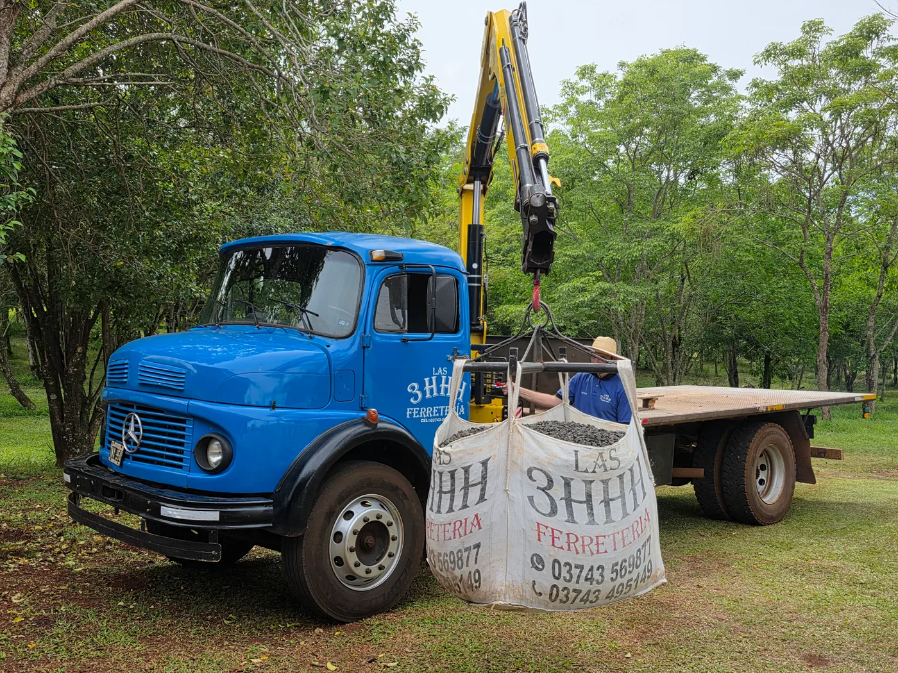
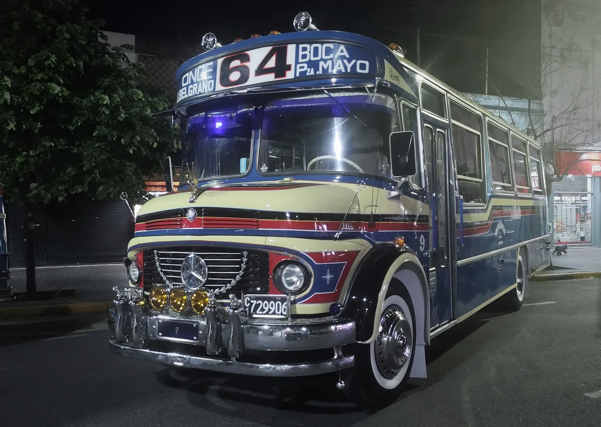

Un camión se vuelve parte de la historia de un país cuando deja de estar asociado a un solo trabajo. El Mercedes-Benz L 1114 llevó mercadería, ayudó en obras, trabajó en explotaciones rurales y terminó convertido en herramienta de innumerables empresas y oficios. Su familia incluso llegó al transporte de pasajeros mediante el chasis LO 1114. Por eso, cuando se pregunta qué camión marcó a la Argentina, el 1114 aparece una y otra vez.
Esta nota no busca repetir la historia técnica y cronológica del 1114 que ya publicamos. La pregunta aquí es otra: ¿qué hizo que una máquina de trabajo se volviera un símbolo reconocible? La respuesta está en la producción local, la flexibilidad del chasis, la vida de las unidades después de la venta y la red de personas que aprendió a mantenerlas.
Un camión nacido en una industria argentina
Según la documentación histórica reunida por el Ministerio de Economía, Mercedes-Benz Argentina comenzó a fabricar el L 1114 en septiembre de 1967. Se presentó con el motor diésel OM 352 de inyección directa y una caja sincronizada de cinco marchas, en un momento en que el transporte de cargas demandaba vehículos más capaces.
El origen local es una parte importante de su significado. El 1114 no fue solamente un modelo importado que apareció de vez en cuando en las rutas: se integró a una industria con producción, carroceros, proveedores, concesionarios y talleres argentinos. Eso ayudó a que su presencia se multiplicara y a que alrededor del vehículo se formara conocimiento práctico.
Un número da escala sin convertirlo en un mito impreciso. El anuario de ADEFA de 1982 registra 34.816 chasis L/LS/LK 1114 acumulados hasta ese año. El mismo cuadro distingue otras variantes 1114 en una fila separada. Por lo tanto, esa cifra no debe presentarse como el total final de toda la familia ni como una cuenta que incluya colectivos.
Una base para trabajos muy diferentes
El 1114 se hizo visible porque podía recibir carrocerías y equipos adaptados a necesidades distintas. Una caja abierta servía para carga general; otras configuraciones permitían reparto, volcado o tareas especializadas. La documentación histórica menciona varias distancias entre ejes y versiones de la familia, incluidas alternativas de tracción integral. Esa diversidad explica por qué dos 1114 pueden lucir muy diferentes y, sin embargo, compartir una raíz común.
La foto de portada muestra una consecuencia de esa flexibilidad: un camión grúa utilizado por una ferretería. No prueba que todas las unidades de fábrica salieran iguales ni que cada transformación haya sido aprobada para cualquier carga. Sí ilustra cómo el chasis podía seguir encontrando tareas después de cambiar de dueño, equipo o aplicación.

El taller también construyó la leyenda
Un vehículo de trabajo no deja huella solo por lo que promete al salir de fábrica. La deja cuando puede mantenerse operativo durante años. La difusión del 1114 significó que muchos mecánicos aprendieran a reconocer sus sistemas, interpretar sus síntomas y comparar variantes. Transportistas, rectificadoras y casas de repuestos acumularon experiencia con motores, transmisiones, frenos y ejes de esta familia.
Eso no quiere decir que cualquier 1114 sea fácil o barato de reparar hoy. Las unidades envejecen; algunas fueron modificadas y otras mezclan componentes de distintos años. El saber de taller ayuda, pero no reemplaza la identificación correcta de cada pieza. Marca, modelo, número de chasis, motor y configuración importan más que la frase “es para un 1114”.
La permanencia de estos camiones también plantea una obligación: conservarlos en condiciones seguras. Frenos, dirección, neumáticos y estructura deben evaluarse según el estado real del vehículo y las exigencias actuales de circulación. Que una máquina siga funcionando no demuestra por sí solo que esté preparada para cualquier viaje o carga.
Del transporte de cargas al recuerdo del colectivo
El número 1114 evoca dos imágenes distintas en la memoria argentina. Una es el L 1114 de cargas; otra, el LO 1114 para carrozar como colectivo. Comparten una historia industrial, pero no son vehículos idénticos ni admiten automáticamente los mismos componentes. Esa distinción suele perderse cuando se habla del “1114” sin más detalle.
El colectivo hizo que el nombre llegara a personas que nunca manejaron un camión. Para muchos pasajeros, el sonido, la cabina y la carrocería de un LO 1114 son parte del recuerdo de un trayecto cotidiano. La siguiente imagen muestra un ejemplar restaurado de la línea 64: una pieza de memoria urbana, no una foto que represente a todos los colectivos de esa época.

¿Fue el único camión que marcó al país?
No. Ford, Dodge, Chevrolet, Fiat, Scania, Iveco y otras marcas también forman parte de la historia del transporte argentino. Elegir al 1114 como protagonista es una lectura editorial basada en su alcance documentado y en la variedad de usos que tuvo, no un ranking oficial que borre a sus competidores.
Los anuarios de producción permiten medir una parte de esa historia, pero no toda. No indican cuántos kilómetros recorrió cada unidad, cuántas familias dependieron de ella o en qué provincia fue más querida. Tampoco prueban que un modelo concreto haya sido “el más confiable” de todos: eso requeriría datos comparables de fallas y servicio que aquí no se presentan.
Lo que permanece
El legado del 1114 se ve en vehículos conservados, en fotos familiares, en colectivos restaurados y en talleres que todavía pueden contar cómo se resolvía una reparación. La unidad azul de esta nota no está en un museo: aparece realizando un trabajo concreto. Esa continuidad, más que una consigna publicitaria, ayuda a explicar por qué el modelo sigue despertando interés.
Para quien busca repuestos, la mejor forma de respetar esa historia es atender al camión real que tiene delante. No todos los 1114 son iguales y la compatibilidad no se decide por nostalgia. Para quien quiere profundizar en fechas, versiones y mecánica, nuestra historia completa del Mercedes-Benz 1114 complementa esta mirada sobre su lugar en la Argentina.